刻俄柏都能看懂的反转链表！论反转链表及其变体
Published:
链表题是面试中比较常见的一类题型，其拥有很多变体，且操作起来需要很强的逻辑推理能力。本人最近刚刚恢复刷题，自然难逃链表的魔掌，被折磨得比较痛苦。最近刷到了leetcode 25，有幸得@灵茶山艾府题解指点，豁然开朗，小彻小悟。特此记录，防止忘了（悲。
题图：刻俄柏都能看懂的反转链表！论反转链表及其变体。由ChatGPT-Image2生成。
ACM 模式下的链表细节
首先，面试一般是ACM模式，和leetcode那种只写函数的模式不同，需要把库导入全，数据结构也要定义清楚，主函数还要写一小部分单元测试。对于链表这种类型，需要自己写链表结构体。下面是C++版本的链表结构体定义：
- 首先是一个单链表。成员由节点值
val和指向下一个节点的指针next组成。构造函数有3个，可以挑有用的写。
struct ListNode {
int val;
ListNode *next;
ListNode() : val(0), next(nullptr) {}
ListNode(int x) : val(x), next(nullptr) {}
ListNode(int x, ListNode *next) : val(x), next(next) {}
};
- 接下来是一个双向链表，除了指向下一个节点的
next指针，还包含一个指向上一个节点的prev指针。
struct ListNode {
int val;
ListNode *prev;
ListNode *next;
ListNode() : val(0), prev(nullptr), next(nullptr) {}
ListNode(int x) : val(x), prev(nullptr), next(nullptr) {}
ListNode(int x, ListNode *prev, ListNode *next) : val(x), prev(prev), next(next) {}
};
-
部分题目会用到其他的指针，比如138. 随机链表的复制就用到了random指针。不过大差不差，根据题目灵活变化。
-
有些题目需要用到哨兵节点，一般是开辟一块内存然后指针指向这块内存，也可以写在一起。
ListNode dummy; // 开辟新内存
ListNode* cur = &dummy; // 添加指向新内存的指针
...
return dummy.next; // 非指针使用点访问类成员
ListNode* head = new ListNode(0); // 另一种开辟和指向
...
return head->next;
由简到繁
LeetCode 206. 反转链表
这道题给我们一个链表，要求我们返回反转后的链表。有两种方式解决：一种是递归，先递到链表末尾，归的时候反转，然后返回；另一种是迭代，顺序一个一个反转，然后返回。
- 代码框架
#include <iostream>
using namespace std;
struct Node {
int val;
Node* next;
Node () : val(0), next(nullptr) {}
Node(int val) : val(val), next(nullptr) {}
Node (int val, Node* next) : val(val), next(next) {}
};
Node* reverseLinkedList(Node* head) {
...
}
int main() {
Node* test = new Node(1, new Node(2, new Node(3, new Node(4, new Node(5)))));
//Node* test = new Node(1);
//Node* test = nullptr;
Node* res = reverseLinkedList(test);
while (res) {
cout << res->val << "\t";
res = res->next;
}
return 0;
}
- 递归：
Node* reverseLinkedList(Node* head) {
// The initial linked list is null or contains only one node.
if (head == nullptr || head->next == nullptr) {
return head;
}
// The last node in the linked list.
auto last = reverseLinkedList(head->next);
// HERE HEAD IS THE LAST NODE!
Node* tail = head->next;
// Against looping.
tail->next = head;
head->next = nullptr;
return last;
}
注意当前head和last的区别。
- 迭代：
Node* reverseLinkedList(Node* head) {
Node* pre = nullptr, * cur = head;
while (cur) {
Node* nxt = cur->next;
cur->next = pre;
pre = cur;
cur = nxt;
}
return pre;
}
迭代过程如下图所示：
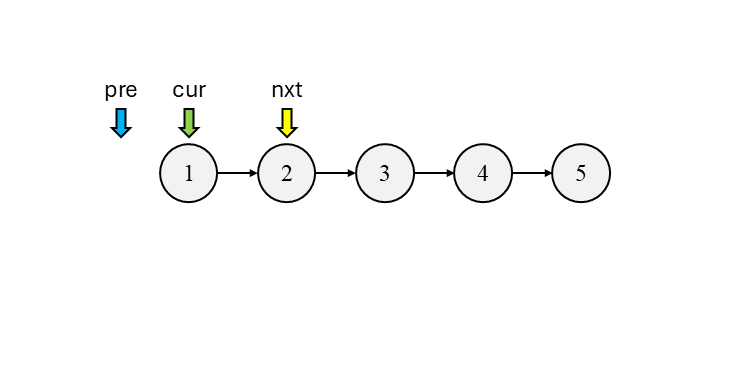
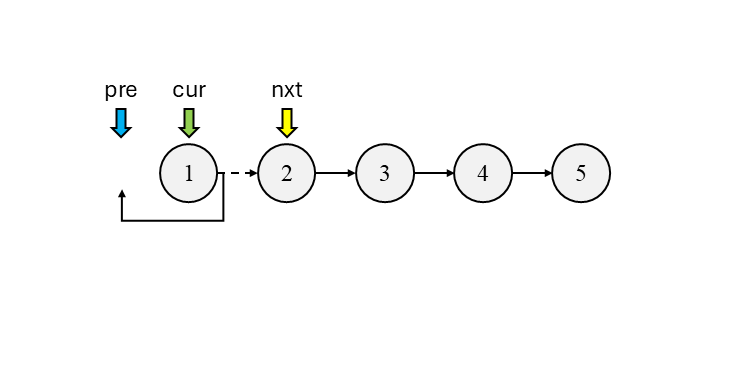
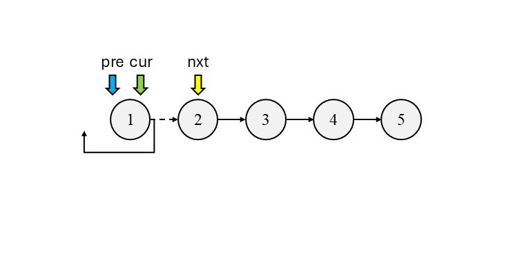
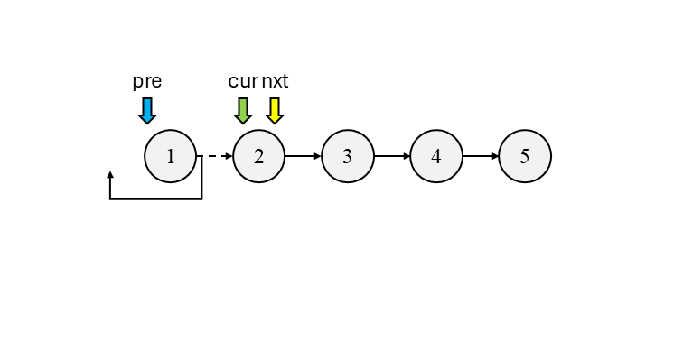
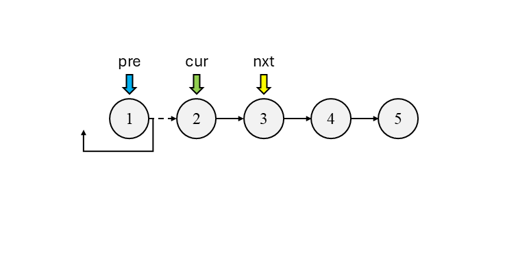
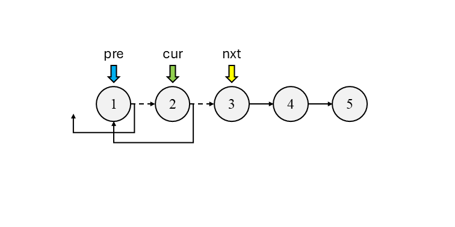
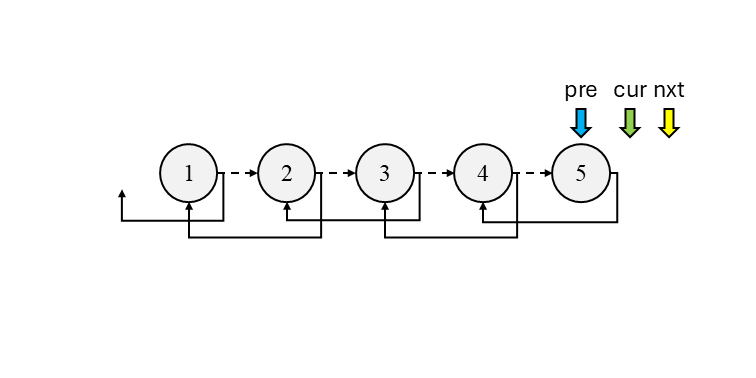
注意：最后返回的指针为pre。
LeetCode 92. 反转链表Ⅱ
给出链表头指针和左右索引，反转两个索引之间的链表。这题的关键是在反转前把指针移到开头，只反转一部分，反转后连接成为一个链表这三点。
#include <iostream>
using namespace std;
struct Node {
int val;
Node* next;
Node() : val(0), next(nullptr) {}
Node(int val) : val(val), next(nullptr) {}
Node(int val, Node* next) : val(val), next(next) {}
};
Node* reverseBetween(Node* head, int left, int right) {
Node dummy(0, head);
Node* newHead = &dummy;
// Move the pointer to the begin.
for (int i = 0; i < left - 1; ++i) {
newHead = newHead->next;
}
Node* pre = nullptr, * cur = newHead->next;
// Only reverse between left and right.
for (int i = 0; i < right - left + 1; ++i) {
Node* nxt = cur->next;
cur->next = pre;
pre = cur;
cur = nxt;
}
// Link as a whole.
newHead->next->next = cur;
newHead->next = pre;
return dummy.next;
}
int main() {
Node* test = new Node(1, new Node(2, new Node(3, new Node(4, new Node(5)))));
Node* res = reverseBetween(test, 2, 4);
//Node* test = new Node(1);
//Node* res = reverseBetween(test, 1, 1);
//Node* test = nullptr;
while (res) {
cout << res->val << "\t";
res = res->next;
}
return 0;
}
最后一步连接示意图：
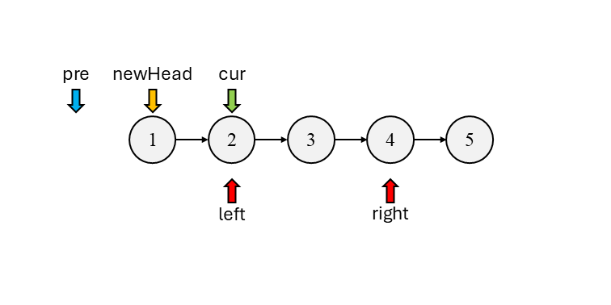
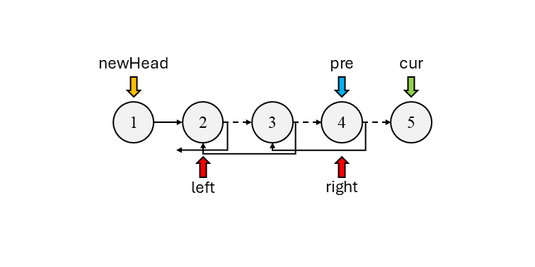
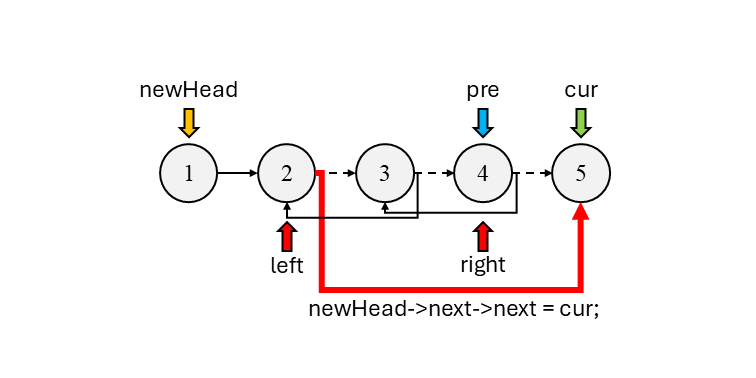
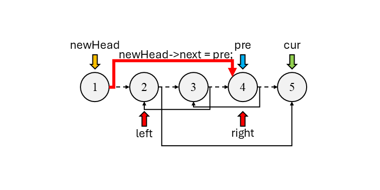
LeetCode 25. K 个一组翻转链表
给出链表的头节点，每k个一组反转链表。于是就k个一组反转链表，需要注意最前面的newHead也要跟着更新。
#include <iostream>
using namespace std;
struct Node {
int val;
Node* next;
Node() : val(0), next(nullptr) {}
Node(int val) : val(val), next(nullptr) {}
Node(int val, Node* next) : val(val), next(next) {}
};
Node* reverseKGroup(Node* head, int k) {
int n = 0;
for (Node* cur = head; cur; cur = cur->next) {
++n;
}
Node dummy(0, head);
Node* newHead = &dummy;
Node* pre = nullptr, * cur = newHead->next;
// Group by K.
for (; n >= k; n -= k) {
// Only reverse K.
for (int i = 0; i < k; ++i) {
Node* nxt = cur->next;
cur->next = pre;
pre = cur;
cur = nxt;
}
// Link K nodes as a whole.
Node* nxt = newHead->next;
newHead->next->next = cur;
newHead->next = pre;
newHead = nxt;
}
return dummy.next;
}
int main() {
Node* test = new Node(1, new Node(2, new Node(3, new Node(4, new Node(5)))));
//Node* res = reverseKGroup(test, 2);
Node* res = reverseKGroup(test, 3);
//Node* test = nullptr;
while (res) {
cout << res->val << "\t";
res = res->next;
}
return 0;
}
依然示意图：
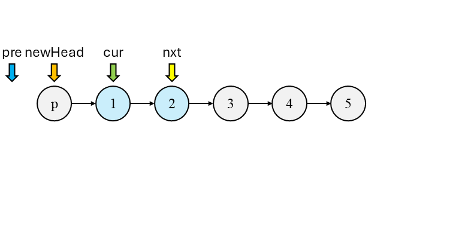
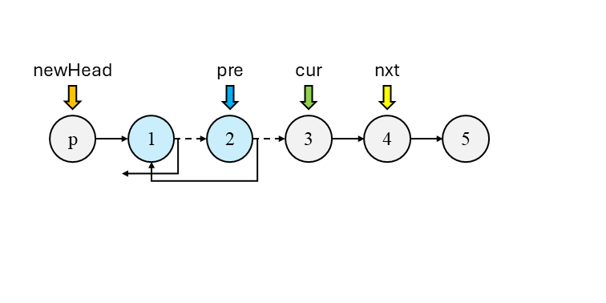
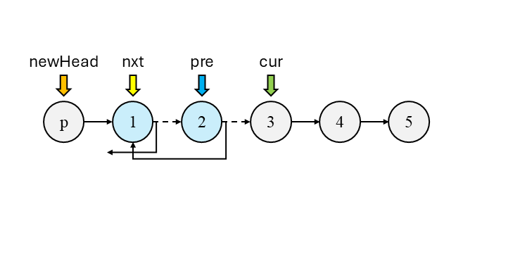
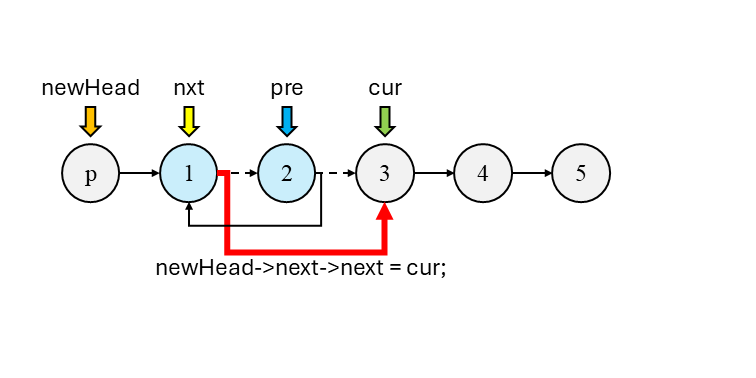
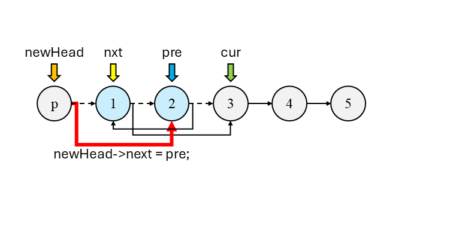
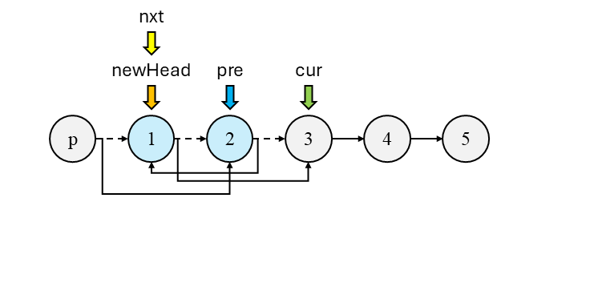
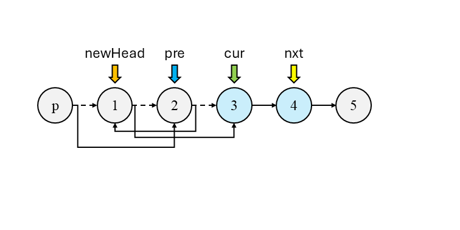
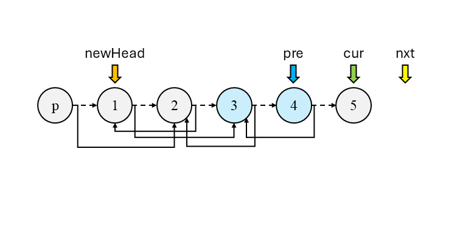
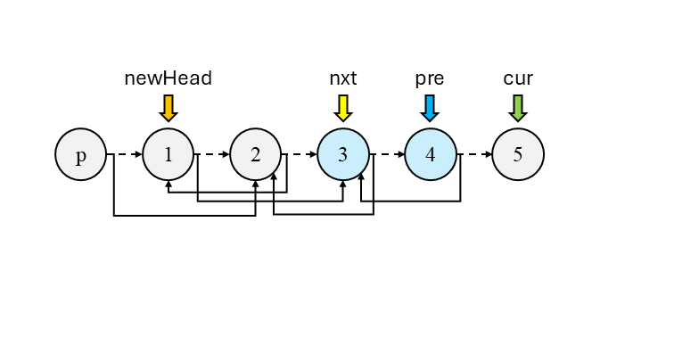
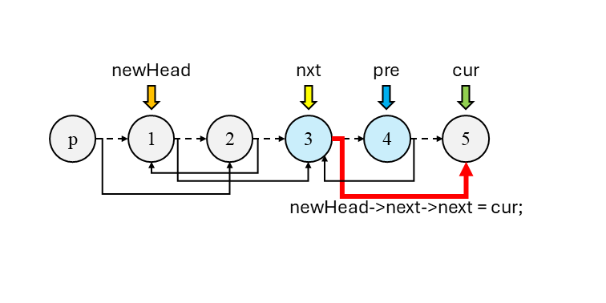
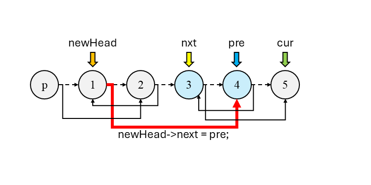
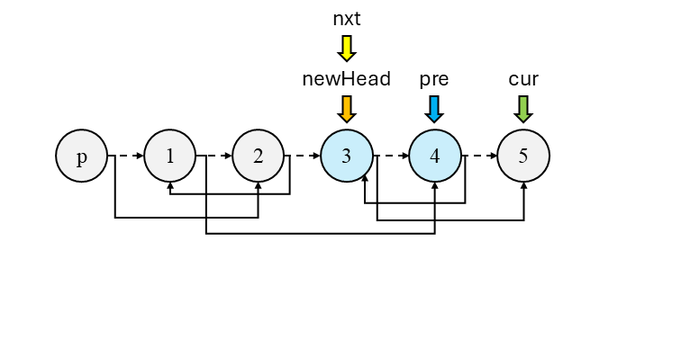
由繁到简
无论是k个一组反转链表，还是反转某个区间的链表，最重要的需要确定：
- 从哪里开始？\(\to\)
newHead在哪？ - 到哪里结束？\(\to\)
newHead->next->next和newHead->next分别接谁？一般是cur和pre。
明确这些，然后中间迭代一下，大概就是这样。
番外
LeetCode 234. 回文链表
给出一个链表头，判断是不是回文链表，比如：1->2->2->1是回文链表，1->2不是。首先，用快慢指针找到链表中点，从中点开始反转后半截的链表，分别得到原来的链表头head和从尾部开始的新链表头head2，逐一比较节点值。
#include <iostream>
using namespace std;
struct Node {
int val;
Node* next;
Node() : val(0), next(nullptr) {}
Node(int val) : val(val), next(nullptr) {}
Node(int val, Node* next) : val(val), next(next) {}
};
Node* findMiddle(Node* head) {
Node* slow = head, * fast = head;
while (fast && fast->next) {
slow = slow->next;
fast = fast->next->next;
}
return slow;
}
Node* reverseList(Node* head) {
Node* pre = nullptr, * cur = head;
while (cur) {
Node* nxt = cur->next;
cur->next = pre;
pre = cur;
cur = nxt;
}
return pre;
}
bool isPalinfrome(Node* head) {
Node* mid = findMiddle(head);
Node* head2 = reverseList(mid);
while (head2) {
if (head->val != head2->val) {
return false;
}
head = head->next;
head2 = head2->next;
}
return true;
}
int main() {
Node* test = new Node(1, new Node(2, new Node(2, new Node(1))));
//Node* test = new Node(1, new Node(2));
cout << isPalinfrome(test);
return 0;
}